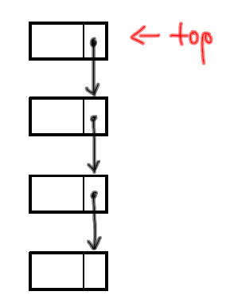
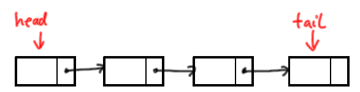

Abstrakte Datentypen - Keller und Schlange
ADT Keller (= Stapel, stack)
Prinzip LIFO: Last in, First Out
Ein Keller ist eine (ggf. leere) Folge von Elementen zusammen mit einem so genannten (ggf. undefinierten) Top-Element
Schnittstelle des ADT Keller
empty : liefert true, falls Keller leer push : legt Element auf Keller top : liefert oberstes Kellerelement pop : entfernt oberstes Kellerelement
Implementationsidee
Wir spendieren uns zur Verwaltung der Datenstruktur eine Variable top.
Wie sollen wir verzeigern?

Implementation
Klasse Keller
class Keller:
def __init__(self):
self.tp = None
def empty(self):
return self.tp is None
def push(self, x):
hilf = Eintrag()
hilf.inhalt = x
hilf.next = self.tp
self.tp = hilf
def top(self):
if self.empty(): raise RuntimeError("Fehler: Keller ist leer")
return self.tp.inhalt
def pop(self):
if self.empty(): raise RuntimeError("Fehler: Keller ist leer")
self.tp = self.tp.nextAnwendungsbeispiel
Korrektheit der Klammerung mittels Keller bestimmen.
\( (((a+b) \cdot c + (a+c) \cdot 2) -3) \cdot 5 \) korrekt
\( (((a+b) \cdot c + (a+c) \cdot 2)) -3) \cdot 5 \) nicht korrekt
ADT Schlange (Queue)
Eine Schlange ist eine (ggf. leere) Folge von Elementen zusammen mit einem so genannten (ggf. undefinierten) Front-Element.
Prinzip FIFO: First in, First Out
Schnittstelle des ADT Schlange
empty : liefert true, falls Schlange leer enq : fügt Element hinten ein front : liefert vorderstes Element deq : entfernt vorderstes Element
Implementationsidee
Wir spendieren uns zur Verwaltung der Datenstruktur zwei Variablen head und tail
Wie sollen wir verzeigern?

Implementation
Klasse Schlange
class Schlange:
def __init__(self):
self.head = None
self.tail = None
def empty(self):
return self.head is None
def enq(self, x):
tmp = Eintrag()
tmp.inhalt = x
if self.empty():
self.head = tmp
self.tail = tmp
else:
self.tail.next = tmp
self.tail = tmp
def deq(self):
if self.empty(): raise RuntimeError("Fehler: Schlange ist leer")
self.head = self.head.next
if self.head is None:
self.tail = None
def front(self):
if self.empty(): raise RuntimeError("Fehler: Schlange ist leer")
return self.head.inhalt
Keller und Schlange in Python
Für den Keller nutzen wir die Python-List mit den Methoden append und pop
a = [] a.append(4) a.append(5) x = a.pop()
Für die Schlange nutzen wir die Funktion deque aus dem Modul collections
mit den Methoden append und popleft
from collections import deque a = [5, 4, 6] q = deque(a) # macht aus der Liste eine Schlange q.append(7) x = q.popleft()
Codingame
Aufgabe: brackets-extreme-edition